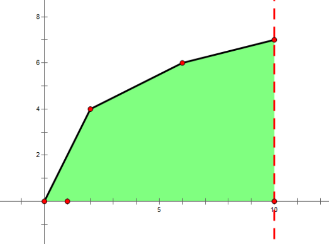
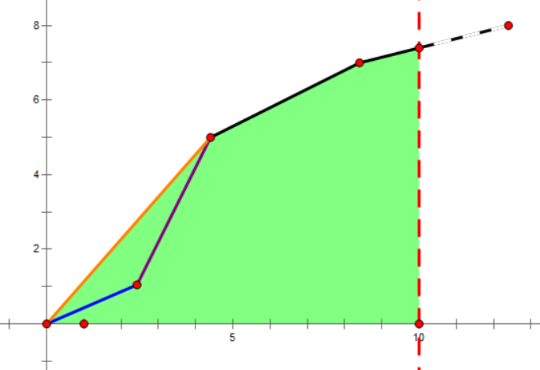

一个小清新OJ.
题意简短，超赞！
题目新颖，超赞！
解法巧妙，超赞！
标程简洁，超赞！
AtCoder Regular Contest 068
E - Snuke Line 给定n n n [ l , r ] [l,r] [ l , r ] m m m
，求k d ( 1 ≤ k d ≤ m , k ∈ Z ) kd(1 \leq kd \leq m,k\in Z) k d ( 1 ≤ k d ≤ m , k ∈ Z ) k k k 1 ≤ n , m ≤ 3 × 1 0 5 , 1 ≤ l ≤ r ≤ m 1 \leq n,m \leq 3\times 10^5,1 \leq l \leq r \leq m 1 ≤ n , m ≤ 3 × 1 0 5 , 1 ≤ l ≤ r ≤ m
记区间的长度为l e n = r − l + 1 len=r-l+1 l e n = r − l + 1 O ( m l o g m ) O(mlogm) O ( m l o g m ) k d kd k d d < l e n d<len d < l e n
考虑当d ≤ l e n d \leq len d ≤ l e n k k k k d kd k d d ≤ l e n d \leq len d ≤ l e n d > l e n d>len d > l e n k d kd k d d > l e n d>len d > l e n k d kd k d O ( ( m l o g m + n ) l o g m ) O((mlogm+n)logm) O ( ( m l o g m + n ) l o g m )
Code
F - Solitaire 有一个双端队列，依次往首或尾插入数1到n。然后你可以从队列的首或位取出一个数，顺次相接组成一个序列。求有多少个序列的第K K K 1 1 1 1 ≤ k ≤ n ≤ 2 × 1 0 3 1 \leq k \leq n \leq 2\times 10^3 1 ≤ k ≤ n ≤ 2 × 1 0 3
显然，当n n n K K K K K K
从n n n 1 1 1 f ( i , j ) f(i,j) f ( i , j ) i i i i i i j j j j j j f ( i , j ) f(i,j) f ( i , j ) f ( i − 1 , k ) , k > j f(i-1,k), k>j f ( i − 1 , k ) , k > j
如果将新的数加入序列2，该如何转移？可以发现，这个数一定是没选择的数中最大的数（序列2也是递减的）。 则f ( i , j ) f(i,j) f ( i , j ) f ( i − 1 , j ) f(i-1,j) f ( i − 1 , j )
事实上，DP的过程还有一个非法的转移。f ( K − 1 , 1 ) f(K-1,1) f ( K − 1 , 1 ) f ( K , 1 ) f(K,1) f ( K , 1 ) K K K
对于剩下的n − K n-K n − K a n s = ( f ( K − 1 , 1 ) − f ( K − 1 , 1 ) ) × 2 n − K − 1 ans=(f(K-1,1)-f(K-1,1))\times 2^{n-K-1} a n s = ( f ( K − 1 , 1 ) − f ( K − 1 , 1 ) ) × 2 n − K − 1 O ( n K ) O(nK) O ( n K )
Code
AtCoder Regular Contest 069
E - Frequency 有n n n i i i a i ai a i
可以发现，这个序列一定是非递增的。假设现在最多的石头堆为x x x y y y a y ay a y a y ay a y
事实上，存在排序后O ( n ) O(n) O ( n )
Code
F - Flags 你在一条线上插n n n f l a g flag f l a g i i i f l a g flag f l a g x i xi x i y i yi y i f l a g flag f l a g d d d d d d
暂未编写 。 考虑二分答案d d d x i , y i xi,yi x i , y i 2 − S A T 2-SAT 2 − S A T x i xi x i y i yi y i d d d O ( n 2 l o g M A X x ) O(n^2logMAX_{x}) O ( n 2 l o g M A X x )
发现许多约束条件是无用的。考虑类似线段树的分治结构来建图 ，对于每个点，至多与O ( l o g n ) O(logn) O ( l o g n ) O ( n ) O(n) O ( n ) O ( n l o g n ) O(nlogn) O ( n l o g n ) O ( n l o g n l o g M A X x ) O(nlognlogMAX_{x}) O ( n l o g n l o g M A X x )
存在O ( n ( l o g n + l o g M A X x ) ) O(n(logn+logMAX_x)) O ( n ( l o g n + l o g M A X x ) )
AtCoder Regular Contest 070
D - Need 给定n n n a i ai a i K K K a i ai a i a i ai a i a i ai a i
对于x < y x<y x < y y y y x x x x x x b i t s e t bitset b i t s e t n − 1 n-1 n − 1 x x x D P DP D P
显然，如果其他的数能组成K − x K-x K − x K − 1 K-1 K − 1 x x x O ( n 2 l o g n w ) O(\frac {n^2logn} w) O ( w n 2 l o g n ) w w w 3 2 32 3 2 6 4 64 6 4
Code
AtCoder Regular Contest 071
E - TrBBnsformBBtion 有字符串S , T S,T S , T A A A B B B A → B B A\rightarrow BB A → B B B → A A B\rightarrow AA B → A A A A A AAA A A A B B B BBB B B B Q Q Q S [ a , b ] S[a,b] S [ a , b ] T [ c , d ] T[c,d] T [ c , d ] ∣ S ∣ , ∣ T ∣ , Q ≤ 1 0 5 |S|,|T|,Q \leq 10^5 ∣ S ∣ , ∣ T ∣ , Q ≤ 1 0 5
想了几分钟就YY了一个结论：把A看作1，把B看作2，两个串能变换当且仅当两个区间和模3同余。然后就A掉了。首先，必要性显然，因为对于区间和模3，不论如何操作都不会改变。
看了官方题解才知道如何证明充分性。首先主要到所有的操作都是可逆的：A → B B → A A A A → A A\rightarrow BB\rightarrow AAAA\rightarrow A A → B B → A A A A → A A , B A,B A , B S S S T T T B B B A A A S , T S,T S , T A A A
Code
F - Infinite Sequence 给定n ( n ≤ 1 0 6 ) n\ (n \leq 10^6) n ( n ≤ 1 0 6 ) n n n n ≤ i , j n \leq i,j n ≤ i , j a i = a j a_i=a_j a i = a j i i i i + 1 ≤ j < k ≤ i + a i i+1 \leq j<k \leq i+a_i i + 1 ≤ j < k ≤ i + a i a j = a k a_j=a_k a j = a k
发现只有前n n n f ( i ) f(i) f ( i ) [ i , n ] [i,n] [ i , n ] a i a_i a i
发现1是一个比较特殊的数，当a i = 1 a_i=1 a i = 1 f ( i ) = f ( i − 1 ) f(i)=f(i-1) f ( i ) = f ( i − 1 )
当
时，序列为
的形式，f ( i ) = ( n − 1 ) × ( n − 1 ) f(i)=(n-1)\times (n-1) f ( i ) = ( n − 1 ) × ( n − 1 )
当
时，序列为
的形式，
。
Code
AtCoder Regular Contest 072
D - Alice&Brown A和B在玩一个游戏。一开始，有两堆石子分别有X X X Y Y Y 2 i 2i 2 i i i i 0 ≤ X , Y ≤ 1 0 1 8 0 \leq X,Y \leq 10^{18} 0 ≤ X , Y ≤ 1 0 1 8
通过打表发现，当∣ X − Y ∣ > = 2 |X-Y|>=2 ∣ X − Y ∣ > = 2
对于( X , Y ) = ( 0 , 0 ) , ( 0 , 1 ) , ( 1 , 0 ) , ( 1 , 1 ) (X,Y)=(0,0),(0,1),(1,0),(1,1) ( X , Y ) = ( 0 , 0 ) , ( 0 , 1 ) , ( 1 , 0 ) , ( 1 , 1 ) ∣ X − Y ∣ < = 1 |X-Y|<=1 ∣ X − Y ∣ < = 1
对于必胜态，设∣ X − Y ∣ = 3 k + r > = 2 ( r = 0 , 1 , − 1 , k > = 1 ) |X-Y|=3k+r>=2\ (r=0,1,-1,\ k>=1) ∣ X − Y ∣ = 3 k + r > = 2 ( r = 0 , 1 , − 1 , k > = 1 ) i = k i=k i = k
对于必败态，操作后X − Y X-Y X − Y
Code
E - Alice in linear land 给定长度为n n n a i ai a i d i di d i a i ai a i ∣ d − a i ∣ < d |d-ai|<d ∣ d − a i ∣ < d ∣ d − a i ∣ |d-ai| ∣ d − a i ∣ d d d d = 0 d=0 d = 0 Q Q Q q i qi q i a [ q i ] a[qi] a [ q i ] n , Q ≤ 5 × 1 0 5 n,Q \leq 5\times 10^5 n , Q ≤ 5 × 1 0 5
首先可以预处理前缀a [ 1 , q i − 1 ] a[1,qi-1] a [ 1 , q i − 1 ] d d d p r e [ q i − 1 ] pre[qi-1] p r e [ q i − 1 ] q i qi q i a [ q i + 1 , n ] a[qi+1,n] a [ q i + 1 , n ] d = s u f [ q i + 1 ] d=suf[qi+1] d = s u f [ q i + 1 ] p r e [ q i − 1 ] > = s u f [ q i + 1 ] pre[qi-1]>=suf[qi+1] p r e [ q i − 1 ] > = s u f [ q i + 1 ]
于是问题转化为如何就s u f [ i ] suf[i] s u f [ i ] s u f [ n + 1 ] = 1 suf[n+1]=1 s u f [ n + 1 ] = 1 i i i s u f [ i ] suf[i] s u f [ i ] a i > = 2 × s u f [ i + 1 ] ai>=2\times suf[i+1] a i > = 2 × s u f [ i + 1 ] s u f [ i ] = s u f [ i + 1 ] suf[i]=suf[i+1] s u f [ i ] = s u f [ i + 1 ] s u f [ i ] = s u f [ i + 1 ] + a i suf[i]=suf[i+1]+ai s u f [ i ] = s u f [ i + 1 ] + a i
Code
F - Dam 有一个水坝容积为L L L n n n i i i V i Vi V i T i Ti T i i i i V 1 V1 V 1 T 1 T1 T 1 V 2 V2 V 2 T 2 T2 T 2 V 1 + V 2 V1+V2 V 1 + V 2 T 1 × V 1 + T 2 × V 2 V 1 + V 2 \large \frac {T1\times V1+T2\times V2}{V1+V2} V 1 + V 2 T 1 × V 1 + T 2 × V 2 n n n i i i i i i n ≤ 5 × 1 0 5 n \leq 5\times 10^5 n ≤ 5 × 1 0 5
假设混合得到的水体积为V 2 V2 V 2 T 3 T3 T 3 T 1 × V 1 + T 2 × V 2 = T 3 × V 3 T1\times V1+T2\times V2 = T3\times V3 T 1 × V 1 + T 2 × V 2 = T 3 × V 3 ( x , y ) = ( V , T V ) (x,y)=(V,TV) ( x , y ) = ( V , T V )
观察这个向量，发现T T T

而新加入一个向量后，最右端的会被删除。此时不一定还是凸包，在左端比较相邻的斜率，合并即可。

整个过程用双端队列维护，复杂度O ( n ) O(n) O ( n )
AtCoder Regular Contest 073 Code
E - Ball Coloring 有n n n x i xi x i y i yi y i R m i n Rmin R m i n R m a x , B m i n , B m a x Rmax,Bmin,Bmax R m a x , B m i n , B m a x ( R m a x − R m i n ) × ( B m a x − B m i n ) (Rmax-Rmin)\times (Bmax-Bmin) ( R m a x − R m i n ) × ( B m a x − B m i n ) n ≤ 2 × 1 0 5 n \leq 2\times 10^5 n ≤ 2 × 1 0 5
假设所有权值中的最大值为M a x Max M a x M i n Min M i n
R m a x = M a x , B m i n = M i n Rmax=Max,Bmin=Min R m a x = M a x , B m i n = M i n R m i n Rmin R m i n B m a x Bmax B m a x
R m a x = M a x , R m i n = M i n Rmax=Max,Rmin=Min R m a x = M a x , R m i n = M i n B m a x Bmax B m a x B m i n Bmin B m i n x i ≤ y i xi \leq yi x i ≤ y i x x x k ( 1 ≤ k ≤ n ) k\ (1 \leq k \leq n) k ( 1 ≤ k ≤ n ) x i xi x i n − k n-k n − k
假设第p ( p > = k + 2 ) p(p>=k+2) p ( p > = k + 2 ) B m i n Bmin B m i n B m a x Bmax B m a x
Code
F - Many Moves 在一根长度为n n n A , B A,B A , B x i xi x i n , Q ≤ 2 × 1 0 5 n,Q \leq 2\times 10^5 n , Q ≤ 2 × 1 0 5
以x i xi x i x [ i − 1 ] x[i-1] x [ i − 1 ] O ( n 2 ) O(n^2) O ( n 2 ) f [ i , j ] f[i,j] f [ i , j ] x i xi x i j j j x [ i − 1 ] x[i-1] x [ i − 1 ] x i xi x i f [ i , j ] = f [ i − 1 , j ] + ∣ x [ i ] − x [ i − 1 ] ∣ f[i,j]=f[i-1,j]+|x[i]-x[i-1]| f [ i , j ] = f [ i − 1 , j ] + ∣ x [ i ] − x [ i − 1 ] ∣ f [ i , x [ i − 1 ] ] = f [ i , j ] + ∣ j − x [ i − 1 ] ∣ f[i,x[i-1]]=f[i,j]+|j-x[i-1]| f [ i , x [ i − 1 ] ] = f [ i , j ] + ∣ j − x [ i − 1 ] ∣
考虑如何从优化转移的时间。对于前面的状态转移方程，事实上就是线段树的区间加。对于后面的状态转移方程，考虑维护f [ i , j ] − j f[i,j]-j f [ i , j ] − j f [ i , j ] + j f[i,j]+j f [ i , j ] + j [ 1 , x [ i − 1 ] ] [1,x[i-1]] [ 1 , x [ i − 1 ] ] f [ i , j ] − j f[i,j]-j f [ i , j ] − j [ x [ i − 1 ] , n ] [x[i-1],n] [ x [ i − 1 ] , n ] f [ i , j ] + j f[i,j]+j f [ i , j ] + j O ( l o g n ) O(logn) O ( l o g n )
Code
AtCoder Regular Contest 074
D - 3N Numbers 给定3 n 3n 3 n A A A n n n 2 n 2n 2 n A ′ A' A ′ n n n n ≤ 1 0 5 n \leq 10^5 n ≤ 1 0 5
发现对于删除后A ′ A' A ′ n n n A A A [ n , 2 n ] [n,2n] [ n , 2 n ] A ′ [ n ] A'[n] A ′ [ n ]
Code
E - RGB Sequence 您需要构造一个长度为n n n m m m i i i [ l i , r i ] [li,ri] [ l i , r i ] x i xi x i n , m ≤ 3 0 0 n,m \leq 300 n , m ≤ 3 0 0
考虑到如果存在不满足的情况，一定是DP过程中最后的R,G,B发生冲突。于是考虑状态f [ R ] [ G ] [ B ] f[R][G][B] f [ R ] [ G ] [ B ] R , G , B R,G,B R , G , B p = m a x { R , G , B } p=max\{R,G,B\} p = m a x { R , G , B }
Code
AtCoder Regular Contest 075
D - Widespread 有n n n i i i h i hi h i A A A B B B n ≤ 1 0 0 0 0 0 n \leq 100000 n ≤ 1 0 0 0 0 0
考虑二分答案次数T T T h i ≤ B T hi \leq BT h i ≤ B T ⌈ h i − B T A − B ⌉ \large \lceil \frac {hi-BT} {A-B}\rceil ⌈ A − B h i − B T ⌉ T T T
Code
F - Mirrored 对于一个正整数n n n r e v ( n ) rev(n) r e v ( n ) n n n r e v ( 1 2 3 ) = 3 2 1 , r e v ( 4 0 0 0 ) = 4 rev(123)=321,rev(4000)=4 r e v ( 1 2 3 ) = 3 2 1 , r e v ( 4 0 0 0 ) = 4 D D D n n n r e v ( n ) = n + D rev(n)=n+D r e v ( n ) = n + D D ≤ 1 0 9 D \leq 10^9 D ≤ 1 0 9
以5位数为例，e d c b a ‾ − a b c d e ‾ = 9 9 9 9 ( e − a ) + 9 9 0 ( d − b ) \overline{edcba}-\overline{abcde}=9999(e-a)+990(d-b) e d c b a − a b c d e = 9 9 9 9 ( e − a ) + 9 9 0 ( d − b ) D D D D D D ( e − a ) m o d 1 0 (e-a)\ mod\ 10 ( e − a ) m o d 1 0
Code
AtCoder Regular Contest 075
E - Connected? 给定R × C R \times C R × C n n n n n n
考虑到，如果不是两个点都在边界上，一定存在方案。 所以我们只要考虑边界点即可。考虑使用一个栈，顺时针处理所有的点x x x x x x x x x
Code
AtCoder Regular Contest 077
D - 11 给定n n n n + 1 n+1 n + 1 [ 1 , n ] [1,n] [ 1 , n ] k = 1 , 2 , . . . , n + 1 k=1,2,...,n+1 k = 1 , 2 , . . . , n + 1 k k k n ≤ 1 0 5 n \leq 10^5 n ≤ 1 0 5
首先找出相同的两个数x x x l , r l,r l , r k k k x x x C n − 1 k + 2 C n − 1 k − 1 + C n − 1 k − 2 C_{n-1}^k+2C_{n-1}^{k-1}+C_{n-1}^{k-2} C n − 1 k + 2 C n − 1 k − 1 + C n − 1 k − 2 ( l , r ) (l,r) ( l , r ) l l l r r r C u + v k − 1 C_{u+v}^{k-1} C u + v k − 1
E - guruguru 有一盏灯具有1 , 2 , . . . , m 1,2,...,m 1 , 2 , . . . , m m m m 1 1 1 x x x a 1 a_1 a 1 n − 1 n-1 n − 1 a i − 1 a_{i-1} a i − 1 a i a_i a i x x x n , m ≤ 1 0 5 n,m \leq 10^5 n , m ≤ 1 0 5
记f ( x 0 ) f(x_0) f ( x 0 ) x = x 0 x=x_0 x = x 0 s ⇒ t s\Rightarrow t s ⇒ t f ( x ) f(x) f ( x ) s < t s<t s < t
对于x ≤ s x \leq s x ≤ s f ( x ) + = t − s f(x)+=t-s f ( x ) + = t − s
对于s < x ≤ t s<x \leq t s < x ≤ t f ( x ) + = t − x + 1 f(x)+=t-x+1 f ( x ) + = t − x + 1
对于t < x t<x t < x f ( x ) + = t − s f(x)+=t-s f ( x ) + = t − s
发现是区间操作，并且只有在最后查询。于是考虑差分，特别的，需要分为常数部分和系数部分。
F - SS 定义“双串”，由两个相同的字符串拼接而成。定义f ( S ) f(S) f ( S ) S 0 S 0 S0S0 S 0 S 0 l , r l,r l , r f 1 0 1 0 0 ( S 0 S 0 ) f^{10^{100}}(S0S0) f 1 0 1 0 0 ( S 0 S 0 ) [ l , r ] [l,r] [ l , r ] ∣ S ∣ < = 2 ∗ 1 0 5 , l , r ≤ 1 0 1 8 |S|<=2*10^5,l,r \leq 10^{18} ∣ S ∣ < = 2 ∗ 1 0 5 , l , r ≤ 1 0 1 8
有待更深入理解。 f ( S 0 S 0 ) = S T S T f(S0S0)=STST f ( S 0 S 0 ) = S T S T ∣ T ∣ |T| ∣ T ∣ ∣ S ∣ |S| ∣ S ∣ f ( S T S T ) = S T T S T T f(STST)=STTSTT f ( S T S T ) = S T T S T T f ( S T S T ) = S T S T S T f(STST)=STSTST f ( S T S T ) = S T S T S T g ( S ) g ( S ) = f ( S S ) g(S)g(S)=f(SS) g ( S ) g ( S ) = f ( S S ) g i + 2 ( S ) = g i + 1 ( S ) + g i ( S ) g^{i+2}(S)=g^{i+1}(S)+g^i(S) g i + 2 ( S ) = g i + 1 ( S ) + g i ( S ) i i i